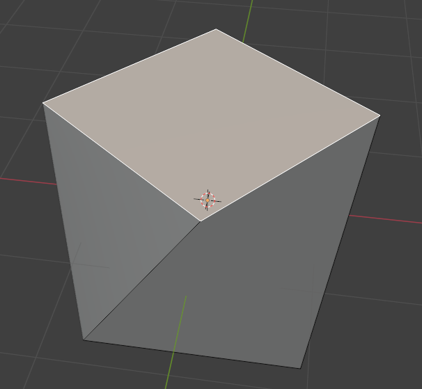

3. 블렌더 기초 실습(3)
1. 다음 줄 틀린 말은 ?
- perspective: 입체적인 표현을 한다.
- orthographic: 직교투영으로 표현한다.
- perspective: top view, front view, right view에서 사용한다.
- orthographic: 거리와 상관없이 물체의 크기를 똑같이 보여준다.
2. 오브젝트를 이동할 때 사용하는 키는 ?
G키R키A키S키
3. 오브젝트를 이동할 때 y축으로만 이동하려 한다. 이 경우 눌러야 하는 키는 ?
G키X키Y키Z키
4. 오브젝트를 이동할 때 x, y축으로만 이동하고 z축으로의 이동은 제한하려 한다. 이 경우 눌러야 하는 키는 ?
Ctrl+Z키Z키Alt+Z키Shift+Z키
5. 아래 그림과 같이 cube가 회전되어 있을 때 바닥과 평형을 이루도록 하는 방법은 ?

G키를 눌러 회전시킨다.R키를 눌러 회전시킨다.B키를 눌러 회전시킨다.A키를 눌러 회전시킨다.
6. 위 문제의 답과 같이 회전시켰더니 오히려 더 이상한 방향으로 회전되었다. 바닥과 평형을 이루도록 회전시키는 방법은 ?

X키를 X축을 기준으로 회전시킨다.Y키를 Y축을 기준으로 회전시킨다.Z키를 Z축을 기준으로 회전시킨다.- blender는 무료 프로그램이라 이런 문제는 해결할 수 없다.
7. 아래와 같이 눈사람을 만들었는데 아래에 있는 sphere(구)를 좀 더 크게 해주고 싶을 때 사용할 수 있는 방법은 ?

- 아래에 있는 sphere를 선택하고
G키를 눌러 약간 키워준다. - 아래에 있는 sphere를 선택하고
R키를 눌러 약간 키워준다. - 아래에 있는 sphere를 선택하고
S키를 눌러 약간 키워준다. - 아래에 있는 sphere를 선택하고
A키를 눌러 약간 키워준다.
8. 아래와 같이 어느 한 점의 위치를 변경하려 할 때 제일 처음 할 일은 ?

e키를 눌러 edit 모드로 들어간다.ctrl키를 눌러 edit 모드로 들어간다.m키를 눌러 edit 모드로 들어간다.tab키를 눌러 edit 모드로 들어간다.
9. edit 모드 진입 후 아래와 같이 어느 한 점(vertex)의 위치를 변경하려 할 때 할 일은 ?
p키를 눌러 점편집 모드로 변경한다.1키를 눌러 edit 모드로 변경한다.2키를 눌러 edit 모드로 변경한다.3키를 눌러 edit 모드로 변경한다.
10. edit 모드 진입 후 아래와 같이 어느 한 선(edge)의 위치를 변경하려 할 때 할 일은 ?

L키를 눌러 선편집 모드로 변경한다.1키를 눌러 선편집 모드로 변경한다.2키를 눌러 선편집 모드로 변경한다.3키를 눌러 선편집 모드로 변경한다.
11. edit 모드 진입 후 아래와 같이 어느 한 면(face)의 크기를 변경하려 할 때 할 일은 ?

f키를 눌러 면편집 모드로 변경한다.1키를 눌러 면편집 모드로 변경한다.2키를 눌러 면편집 모드로 변경한다.3키를 눌러 면편집 모드로 변경한다.
12. 다음과 같이 작업했을 때 결과물은 ?
1. cube를 선택한다.
2. tab 키를 눌러 edit 모드로 들어간다.
3. 1키를 누른다.
4. 어느 한 점을 선택한다.
5. G키를 누른다.
6. X키를 누른다.
7. 마우스를 움직인다.


13. 다음과 같은 작업결과물을 만드는 작업을 순서대로 기술했다. 이 중 틀린 것은 ?

-
cube를 선택한다.
-
tab키를 눌러 편집 모드로 들어간다.
-
3키를 눌러 면편집 모드로 변경한다. -
r키를 눌러 회전 기능을 활성화한다. -
ctrl + z키를 눌러 z축 회전으로 설정한다. -
마우스를 움직여 선택된 면을 회전한다.
14. 다음 그림과 같은 편집과 방법을 올바르게 짝지은 것은?

- 모따기,
v키 - 모깎기,
v키 - 모따기,
b키 - 모깎기,
b키
15. 다음 그림과 같은 편집과 방법을 올바르게 짝지은 것은?

- 모따기, 모깎기 후 마우스 휠
- 모깎기, 모따기 후 마우스 휠
- 모따기, 모깎기 후 마우스 휠
- 모깎기, 모따기 후 마우스 휠
16. 다음 그림과 같이 면을 도출(extrude)할 떄 사용하는 키는?

e키x키t키r키
17. 면을 도출(extrude)시킨 직후 이 작업을 취소하려면 ctrl + z 키를 누른다. 그런데 이 때, ctrl + z 키를 2번 이상 눌러 그 면을 선택한 것까지 취소해야 한다. 그 이유는(답 2개)?
- extrude는 메모리를 많이 차지하는 연산이므로
- extrude는 CPU를 많이 차지하는 연산이라 정확하게 제거하지 않으면 앞으로 CPU를 더 많이 사용하기 때문
- extrude는 면을 하나 더 생성하는 거라 나중에 이 면이 반드시 문제가 되기 때문에 완벽하게 제거하려고.
- extrude하면 바로 그 자리에 똑같은 면이 하나 더 생성되기 때문에 면이 하나 더 있는지 알아보기 어렵기 때문
18. fbx는 무엇의 약자인가?
- 약자가 아니다.
- FaceBook eXtension
- FilmBook eXtension
- FilmBoX